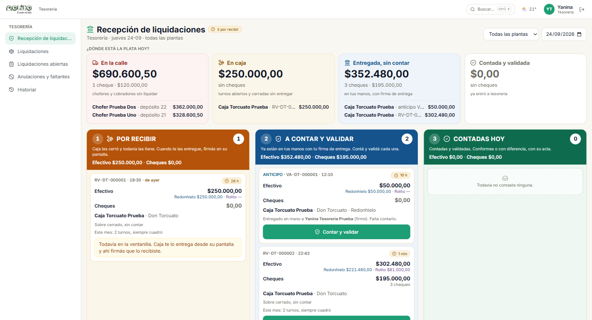
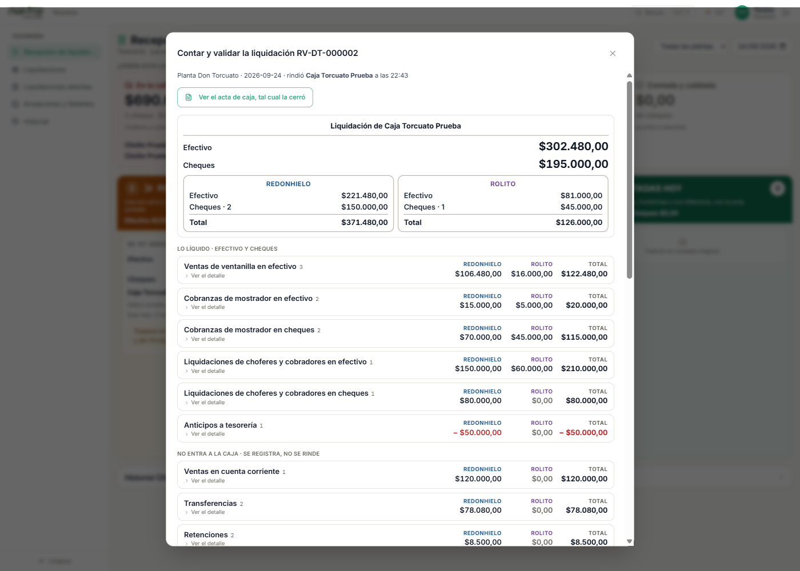
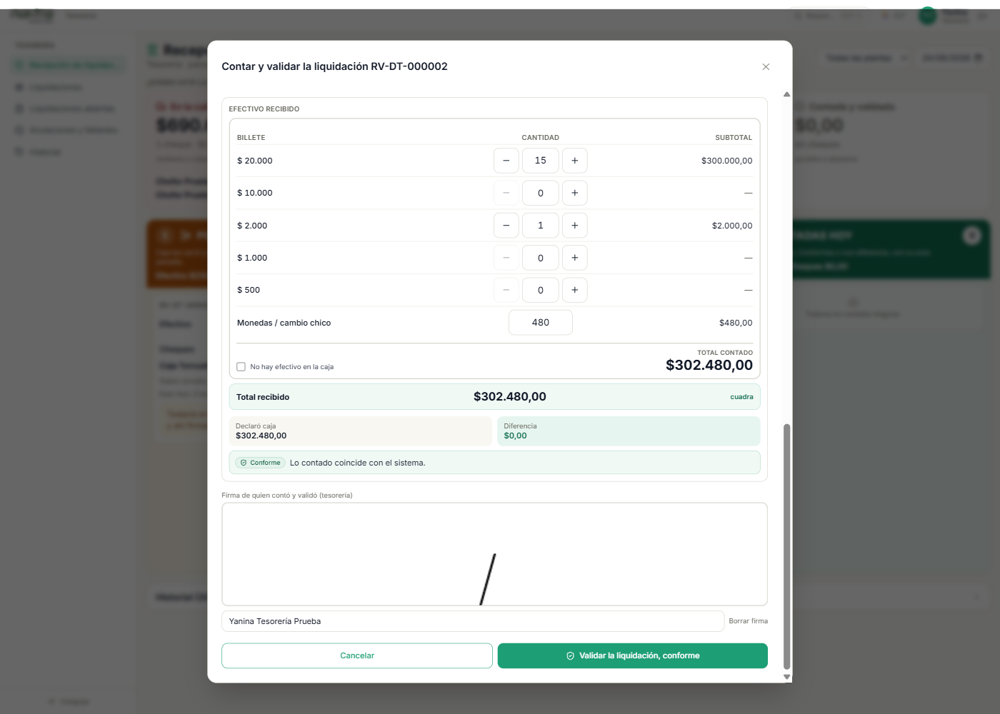
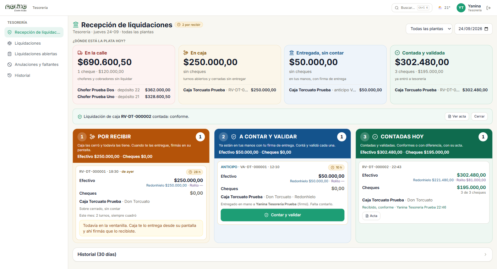

La app sigue la plata por etapas. En cada etapa hay una persona responsable y una firma que lo deja escrito. La idea es que ninguna caja quede sin rastrear: en cualquier momento se puede ver dónde está cada peso y quién lo tiene.
Tesorería ve estos cuatro números apenas entra a la app. Caja los ve en su propia liquidación y en la pantalla de liquidaciones abiertas.
Tesorería recibe la plata de todas las cajas, la cuenta, la valida y deja el acta. Su pantalla de entrada responde una sola pregunta: ¿dónde está la plata hoy?

La tira de arriba muestra los cuatro lugares (en la calle · en caja · entregada sin contar · contada y validada) con el efectivo, los cheques y quién tiene esa plata. Los importes son los del sistema hasta que se cuenta; una vez contada, el número es lo contado y, si hubo, la diferencia en rojo.
Arriba a la derecha podés filtrar por planta y elegir el día (para revisar un día anterior; el carril 3 muestra lo contado ese día).
| Carril | Qué hay | Qué podés hacer |
|---|---|---|
| 1 · Por recibir (naranja) | Liquidaciones que caja cerró y todavía tiene. No están en tus manos. | Nada acá. Caja te la entrega desde su pantalla y ahí firmás que la recibiste. |
| 2 · A contar y validar (azul) | Liquidaciones y anticipos que ya están en tus manos con tu firma de entrega. | Contar y validar |
| 3 · Contadas hoy (verde) | Lo que contaste y validaste hoy, conformes y con diferencia. | Ver el acta. |
Cada tarjeta muestra el código (RV-… para liquidaciones, VA-… para anticipos), la hora, Efectivo y Cheques con el partido por empresa, quién rindió, cuántas horas lleva esperando y, si caja declaró diferencia al cerrar, el aviso en rojo. "Este mes: N turnos, M con diferencia" es la memoria de ese cajero.
Cuando caja te trae el sobre cerrado, no lo abras ni lo cuentes todavía. Caja toca "Entregar a tesorería" en su tablet, elige tu nombre y vos firmás ahí que recibiste el sobre cerrado. Recién entonces la liquidación pasa del carril 1 al carril 2 y aparece en "Entregada, sin contar".


Al validar, la liquidación pasa al carril 3, la tira de arriba la suma en "Contada y validada", el cajero ve en su pantalla quién la contó y cómo dio, y sale el acta con las tres firmas: quien rindió, quien recibió el sobre cerrado y quien contó.

Un anticipo (código VA-…) es plata que caja te dio antes de cerrar el turno. Ya nace con tu firma de entrega (la pusiste en la tablet de caja), así que aparece directo en el carril 2, A contar y validar, y se cuenta igual que una liquidación: tabla de billetes, conforme o con diferencia, firma. Dice de qué empresa sale.
| Pantalla | Para qué |
|---|---|
| Ver, en modo lectura, lo que rinden los repartidores y sobre todo qué están cobrando los supervisores: cada recibo, con sus cheques y retenciones. | |
| Choferes y cobradores de cualquier fecha (hasta 45 días) que todavía no liquidaron con caja: la plata que sigue "en la calle". | |
| Bandeja para autorizar anulaciones de facturas y recibos, y faltantes de mercadería que caja pidió autorizar. Solo aparece si tenés el permiso. | |
| Cierres de caja de todos los cajeros, por mes, con la diferencia de cada uno y el acta. |
Tres veces por día, a las 6, a las 13 y a las 18, la app revisa qué quedó colgado y avisa por notificación (push) a caja, tesorería y gerencia, y por mail a la lista configurada en Ajustes generales:
El mismo aviso aparece como franja amarilla arriba de Liquidación de caja y de Recepción, con el link a Liquidaciones abiertas. Es un aviso: nunca frena la operación.
Cerré la liquidación y me equivoqué en un billete. El cierre no se edita. Tesorería lo va a ver como diferencia al contar y queda con motivo y nota. Avisale antes de entregar para que lo escriba en la nota.
Tesorería no está para firmar la entrega. La liquidación queda cerrada y sin entregar (carril 1 de tesorería, y en tu pantalla "Todavía no se lo entregaste"). Cuando aparezca, la entregás con la firma, aunque sea otro día: el bloque "Liquidaciones de otros días sin entregar" queda a la vista hasta entonces.
¿Por qué tesorería cuenta un solo total si caja contó por empresa? Porque caja juntó todo el efectivo en un solo sobre. El partido por empresa ya quedó escrito en la liquidación; tesorería solo necesita saber si el sobre tiene lo que dice.
Me pidieron un anticipo pero el que recibe soy yo mismo. No se puede: el anticipo y la entrega los tiene que recibir una persona de tesorería distinta de quien rinde.
¿Dónde veo la plata que sigue en la calle? Tesorería, en la tira de arriba ("En la calle") y en Liquidaciones abiertas. Caja, en Liquidaciones abiertas.